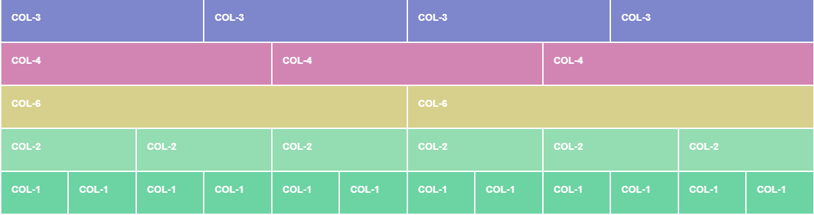

ברוכים הבאים
לפלטפורמה לתכנות מתקדם
בחרו נושא:
GITHUB היא פלטפורמה חינמית שמאפשרת למתכנתים ואנשי פיתוח לנהל את הקוד עליו הם עובדים ולעבוד עליו בצורה מסודרת ונקייה.
המילה GITHUB מגיעה מכלי בשם GIT שעוזר לנו לנהל גרסאות ויוצר לנו מבנה כמו של עץ כאשר הגזע הוא הפרויקט הראשי והענפים הם הגרסאות עליהם עובדים. כאשר רוצים לעדכן את ה"גזע" פשוט מצרפים אליו את הענף. זה קל ועושה סדר!
בעזרת גיטהאב תוכלו לאחסן את הקודים שלכם ברשת, לשתף אותם עם אחרים ואפילו לערוך קודים אחד של השני מרחוק.
לגיטהאב כמה יכולות מרכזיות שחשוב להכיר:
ניהול גרסאות - ככה נוכל לשחזר את הקוד שלנו ולראות גרסאות קודמות שכתבנו.
פתיחת BRANCH (ענף) שעליו נבצע שינויים לפני שנעדכן את הקובץ הראשי.
מיזוג MERGE שמאפשר לנו להטמיע את השינויים שביצענו בענף לענף אחר או לענף הראשי.
מיום הקמתה גיטהאב הפכה להיות מאוד פופולרית בקרב מתכנתים והיום היא משמשת כסטנדרט להצגת יכולות התכנות ותיק העבודות שלנו. טיפ שלנו: שמרו הכל בגיטהאב! גם פרויקטים שנראים לכם קטנים ופשוטים הם למעשה הבסיס לתיק העבודות שלכם.
אז פתחו חשבון גיטהאב ובוא נתחיל!
כשעובדים עם גיטהאב, יש כמה מושגים בסיסיים שחייבים להכיר:
REPOSITORY - מאגר המידע שבו נמצאים תיקיות וקבצי הקוד. או בקיצור - REPO.
BRANCH - ענף עבודה. יש ענף ראשי ויש ענפי משנה שעליהם עובדים על גרסאות שונות לפני שמתחייבים לענף הראשי.
COMMIT - התחייבות, שמירה של העותק בנק' הזמן הנוכחית לענף הרצוי.
REQUEST - בקשה.
MERGE - איחוד. כאשר נרצה לאחד בין קטעי הקוד שעבדנו עליהם לענף הרצוי.
FORK - למזלג פרויקט של מישהו אחרי אליכם ולעבוד עליו אצלכם.
כעת אחרי שפתחתם חשבון - פיתחו REPOSITORY חדש והתחילו לעבוד!
קראו לתיקייה STARTUPISTEAM_FIRST_REPOSITORY והכניסו הסבר קצר על מטרת האתר שאתם בונים כנהוג.
כעת העלו לתיקייה קובץ HTML כלשהו לבחירתכם בעזרת ADD FILE --> UPLOAD.
טיפ חשוב: שימו לב כדי להעלות את הקובץ לתוך תיקייה בגיטהאב יש להגדיר העלאת קובץ חדש ובשם שלו להגדיר את התיקייה שבה הוא יהיה לדוגמה:
אם אנחנו רוצים קובץ חדש בשם INDEX בתוך תיקייה בשם CODE נרשום זאת כך בשם הקובץ: CODE/INDEX.
כדי לשנות את הקבצים הקיימים קודם כל עליכם להגדיר את הענף שעליו אתם עובדים.
עדיף לא לעבוד על הMAIN מכיוון שזהו הענף הראשי ואנחנו לא רוצים לעשות בו שינויים משמעותיים מבלי שבדקנו אותם קודם ולכן נפתח ענף חדש ונקרא לו BRANCH1.
הענף שפתחתם זהה לחלוטין לענף הMAIN, זאת המטרה שנוכל לעבוד על הפרויקט הקיים ובמידה ונהיה מרוצים מהשיניים נמזג ׁMERGE בין הענף והשינויים יוטמעו בענף הראשי.
לאחר שהענף נוצר נכנס לתוך הקובץ HTML שהעלינו ונבצע בו כמה שינויים כדי שלא יהיה זהה לMAIN.
לאחר שאנחנו מרוצים מהשינויים נלחץ על COMMIT CHANGES ונשמור את השינויים שביצענו.
שימו לב לאפשרויות השמירה. חשוב לשמור על הענף הנכון.
כעת מופיעה לנו האפשרות לעשות COMPARE & PULL REQUEST לענף הראשי.
הכוונה היא להשוות בין הענפים וליצור בקשה משיכה מהענף הראשי לעדכון.
אחרי שראינו את השינויים ואנחנו מוכנים יש ללחוץ על CREATE REQUEST כדי לשלוח בקשה לאיחוד.
נבדוק בפאנל הPULL REQUESTS שלנו ונראה שהתקבלה בקשה חדשה.

אם נרצה לאשר נלחץ על MERGE ושני הענפים יהיו שוב זהים.

זהו! כזה פשוט!
הצורה הנוחה והמומלצת לעבודה היא בעזרת GITHUB DESKTOP.

התוכנה מקשרת בין חשבון הגיטהאב שלכם למחשב שאתם עובדים עליו ולתוכנה שאתם עובדים איתה (לא בהכרח רק VS CODE).
שימו לב שיש להכניס את פרטי החשבון שלכם בגיטהאב כדי שהתוכנה תוכל להתחבר לחשבון הנכון.
כבר במסך הכניסה תוכלו לבחור לעשות CLONE (שכפול) של איזה REPO תרצו לעבוד עליה ואיזה BRANCH. יש לבחור את הענף הנכון כדי שלא יהיו טעויות!

כעת נלחץ על OPEN IN VISUAL STUDIO CODE ונפתח את הענף.
כאשר נעבוד על הקבצים נרצה שמתווספים להם אותיות. בואו נבין מה האותיות האלה אומרות:
M - נעשו שינויים בקובץ.
U - קובץ חדש שלא נמצא בתיקיות פרויקט בגיטהאב.
לאחר שסיימנו לערוך את השינויים בקובץ נחזור לגיטהאב דסקטופ ונעלה את השינויים שבוצעו לענף שעבדנו עליו ואפשר אפילו לעשות PULL REQUEST מהענף שעבדנו עליו לענף הראשי.
נסו זאת, ערכו את קובץ הINDEX ששמתם קודם דרך הVS CODE וראו את השינויים באתר!
בחרו נושא:
מויקיפדיה:
"Bootstrap היא סביבת עבודה בקוד פתוח לצד לקוח, שמכילה אוסף של כלים ליצירת אפליקציות רשת ואתרים.
Bootstrap שוחררה בשנת 2011 על ידי טוויטר, אחרי שהתחילה כספרייה סגורה שנוצרה לשימוש פנימי בטוויטר"
בעזרת בוטסטראפ אפשר ליצור אתרי אינטרנט מהירים יותר, יפים יותר והכי חשוב רספונסיביים שיתאימו לכל מסך!
לבוטסטראפ יש קבצי CSS ו-JS עם מחלקות ופונקציות נפוצות שמשתמשים בהם באתרי אינטרנט. ככה ניתן לעצב ולהשתמש בקלות וללא קושי באלמנטים כמו כפתורים, מדי התקדמות, טאבים, ועוד…בדף HTML שלכם.
בנוסף, ישנם סקריפטים שכתובים בJQUERY שניתן להשתמש גם בהם.
למעשה, גם הפלטפורמה הזו שאתם רואים עכשיו כתובה בעזרת bootstrap!

בוטסטראפ היא ספרייה שבנויה ע"ב GRID בCSS.
ולפיכך, היא מחלקת את האתר לשורות ולעמודות.

את השורות והעמודות ניתן ליצור בעזרת הקצאת class לdiv הנבחר.
לדוגמה אם div צריך להיות שורה את ניתן לו class של row.
בתוך row נוכל ליצור col שזה קיצור column (עמודה). כפי שהבנתם בוטסטראפ מחלקת את הדף ל12 columns. ואנחנו רק צריכים לבחור איזה רוחב אנחנו רוצים!
מידות columns:
למסכים קטנים - sm
למסכים בינוניים (טאבלטים ומסכי מחשב קטנים) - md
למסכים גדולים - lg
שימו לב. div שהולך להכיל אלמנטים נוספים יקבל גם את class של container, ואם נרצה אותו שיהיה לכל המסך ניתן לו class של container-fluid.
טיפ: ניתן לשלב כמה classes שרוצים רק צריך להפריד ביניהם ברווח. חשוב לא להתבלבל בין id שניתן להגדיר רק אחת.
אז תכלס, איך משתמשים בזה?
מכירים שאתם מקשרים קובץ CSS או JS חיצוני בעזרת התגיות STYLE ו-SCRIPT?
אז בעזרת CDN (content delivery network) אנו יכולים להשתמש בקישורים לדפים של בוטסטראפ ולחבר את קבצי הJS והCSS ולהתחיל להשתמש במחלקות שלהם.
טיפ: כדי להשתמש בגרסה העדכנית ביותר יש לחפש את הCDN של Bootstrap בגוגל ולהשתמש בגרסה העדכנית ביותר.
אז התחילו ליצור את הפרויקט הראשון שלכם בבוטסטראפ!
פורטפוליו בוטסטראפ בקישור הבא:
קישור לפרויקט בניית פורטפוליו בבוטסטראפ
בפרויקט זה השתמשנו במד התקדמות, קישור לטלפון ולמייל, קרוסלה של תמונות ועוד.
בנו גם לעצמכם את הפורטפוליו שלכם וקשרו אותו לענן.
בחרו נושא:
1
function openCity(evt, shiurName) {
var i, tabcontent, tablinks;
tabcontent = document.getElementsByClassName("tabcontent");
for (i = 0; i < tabcontent.length; i++) {
tabcontent[i].style.display = "none";
}
tablinks = document.getElementsByClassName("tablinks");
for (i = 0; i < tablinks.length; i++) {
tablinks[i].className = tablinks[i].className.replace(" active", "");
}
document.getElementById(shiurName).style.display = "block";
evt.currentTarget.className += " active";
}
2
3
4